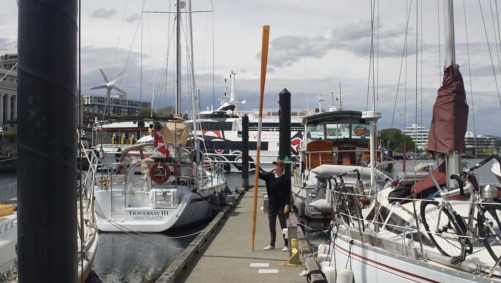
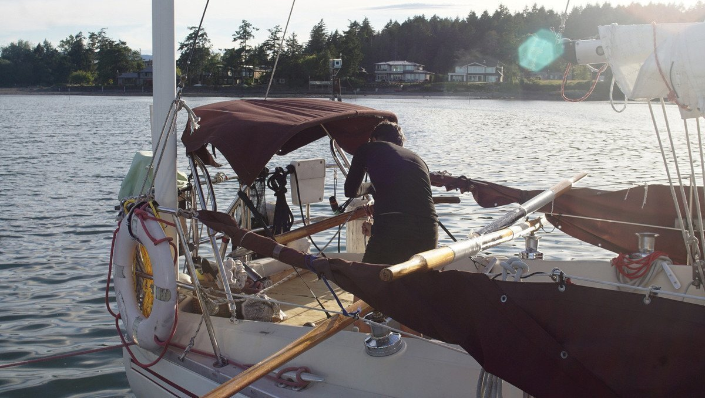
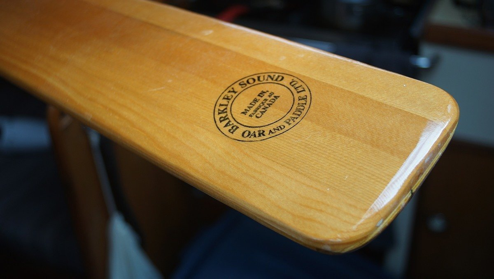
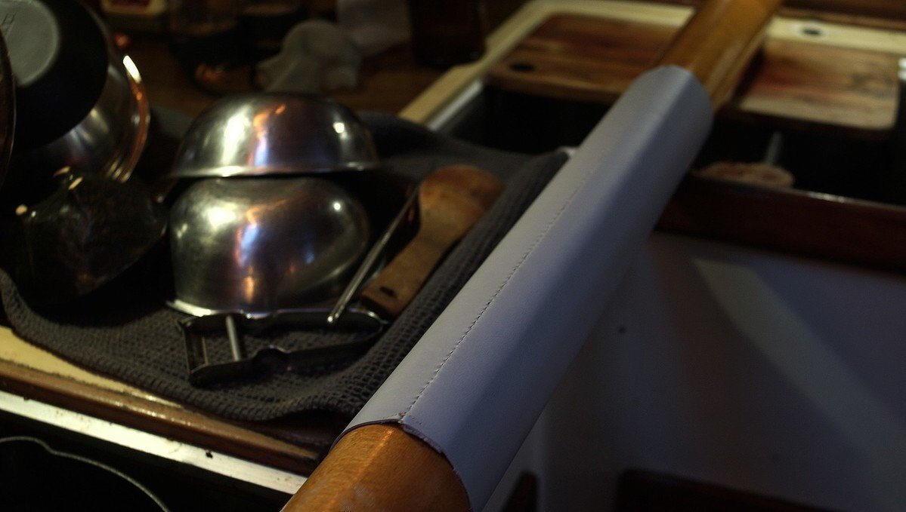
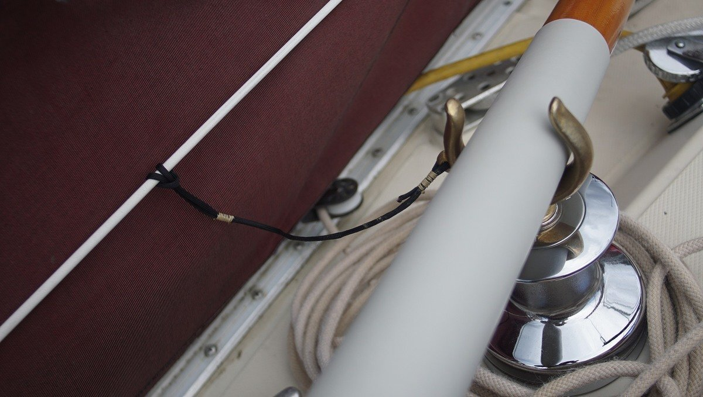
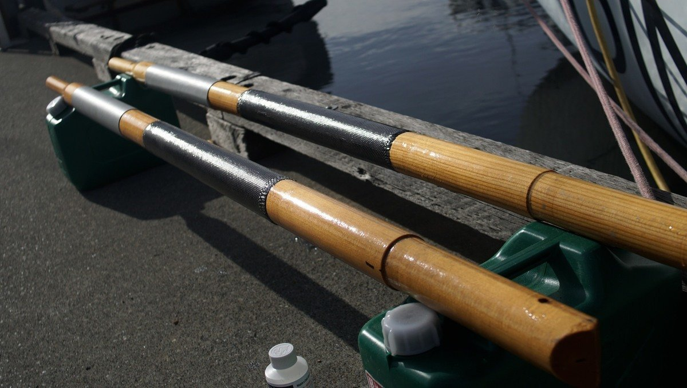
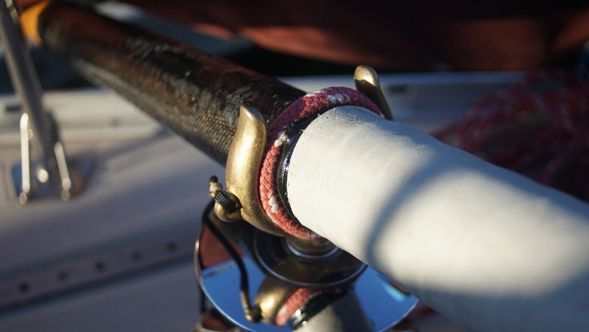

oars
2021.05.06
Victoria BC, Canada
Click below dates for more recent updates:
We keep a set of oars aboard Pino, they are 4.5m (15 ft) long, made from Sitka Spruce and laminated with TITEBOND 3 glue. They are designed to collapse in two and connect by way of an aluminum sleeve. These oars are typically commissioned, and used by the Canadian Coastguard. We have two beefy brass oar locks that we plan to affix to the boat.
Why oars?
Inspired by the engine-less propulsion techniques employed by sailors of The Race to Alaska, we got ourselves a pair of oars. The goal or having oars is to keep us moving on windless days for short distances, without having to rely entirely on our combustion engine. We don't know how fast we can go, as we haven't installed them yet. We estimate a speed of 1.5-2 knots. We will report back with this information soon (see timeline below).
The goal of rowing a sailboat is not speed or efficiency. It does not replace an inboard engine, but it is a simple, and timeless way of keeping a vessel moving when there is no weather, or current. It's also a great way to combat restlessness.
Stern-sculling vs sculling with 2 oars
Our first idea was to installing an oar mounted at the stern (stern sculling), which we'd use to propel the boat with side-to-side movements that create forward lift in the water.
We spoke to the owner of Barkley Sound Oar and Paddle about our plans. He had built oars for boats in the R2AK in the past, and suggested sculling with two oars instead of one. We saw the start of the R2AK in 2016 in Victoria. There were boats propelled by two oars, and others with a stern-mounted oar. The ones propelled by two oars had better forward motion.
Entranced with the idea, we asked him if we could commission some long oars. He told us he no longer made them because it wasn't economically viable... BUT, he had ONE such pair left in his shop. He kept those oars for himself to use on a boat, but never did, and offered to sell them to us. We were very, very lucky to get a pair.
We plan to install stretchy lines from the mast to the oars, to make it easier to row. The lines would help with forward pulling.
Inspiration
The idea of a rowing a sailboat was inspired by the R2AK racers, How to Sail Oceans, Far Reach Voyages and this awesome anonymous fellow.
21.05.06
Victoria, BC, Canada
Received oars and oarlocks from Barkley Sound Oar and Paddle.
Stitched on sleeves to protect wood that will be in contact with oar locks.
For now, we'll try and use our winches as oar locks. The insert fits perfectly. We attached a line to the oar lock so we don't ever lose it overboard.
21.05.11
Victoria, BC, Canada
Went out for a test row... and it works! Pino was propelled by oars around the Victoria Inner Harbor. A neighbor ashore filmed it, view it here. Using the winches works fine, but it is a bit high... and the oars were rubbing against the lifelines a little, as well as a block we have set up for the jib line. The oars are made of a soft wood, so we decided to add a carbon fiber sleeve, sealed with some epoxy to reinforce them.
21.06.02
North Saanich, BC, Canada
Our engine had issues, and so we decided not to use it. We moved from Cadboro Bay to the North Saanich marina, but were becalmed after passing between James and Sidney Island. We tried to row against the current, it did little to carry us forward, as expected, but it kept us busy and allowed us to experiment. We found that it was easy to row when taking an oar each, with one person facing aft, and the other forward. When the tide turned, we found wind and moved close to Port Sidney Marina, there the wind died again and we rowed from there to the Van Isle Marina breakwater. In complete calms, with no contrary current rowing is a breeze! We did row a lot though, and our arms were very, very tired on arrival.
The sleeves we made came apart, it seems like they're not strong enough for prolonged rowing. We also found that the hardest part was to keep the oars from sliding down into the water. They stayed in the oar locks most of the time, but we had to re-adjust them every 5 minutes or so. We have a lot more fixes to do!
2021.06.15
North Saanich, BC, Canada
We epoxied a thin rope onto the part of the oar as a stopper. We also made a rope loop to further help keep the oars from sliding. We have yet to test these, but we think it will help a lot!